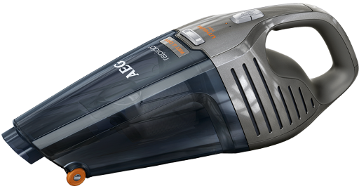
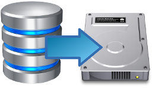

Movie File Merger

Movie File Merger Details
Movie File Merger makes video collection management faster and easier.
Check out the details below to get a rough idea about what can be done.
Combine Collections
Movie File Merger supports the selective combination/maintenance of video collections, movies, series, or documentaries. It can be used for other types of collections, but it is optimized for videos.
Select
Select which videos are copied or moved. Only videos in the Wish list are considered. To select videos or movies from your friend's collection you just need his or her list. You can select them at home and once finished go to your friend and start copying.
Distribute
Lists are small for distribution over the internet. Once you have scanned your collection, you can send it to your friend, who can select what to copy offline.
Ignore
Videos in the Existing and Garbage lists are ignored. That way you don't have to worry about copying the same stuff again and again.
Predefine
Select movies according to predefined genre lists from the internet, for example, IMDb. Just drop the list in the Wish list and only videos from that genre are copied. If you want to ignore a complete category, then drop it in the Garbage list.
Filter

Select videos according to resolution or other details such as media information; for example, horizontal resolution is greater than 1000 pixels. Filters are Regular Expressions and really flexible.
Search
Search for movies or series information on the internet, like on TheTVDb. Drop any list entry on the Search for information drop area.
Download
Search for torrents on the web. Select the sites, which should be searched, and drop any list entry on the Download drop area.
Inspect
List detailed media information with MediaInfo. Any videos in the Existing list are scanned with the relevant media information.
View
View video media information in the pop-ups when hovering over a list entry. Videos in the Existing list are scanned with the relevant media information. Basic information is shown in the screen tip when hovering over the list entry.
Play

Play videos in the Import list with your default player. Drop any video existing on connected hard disks on the Play drop area.
Rip
Click on Just Rip It... to get all videos in the Import folder. Videos in the Existing and Garbage lists are not touched.
Scan
Click on Just Scan It... to scan all videos in all top level folders on all hard disks connected to the computer. The top level folders have to contain the collection name so that videos in that folder are put in the according collection.
Maintain Your Collections
Movie File Merger makes the maintenance of your collections easier. It points out bad names, supports moving and sorting into collection types. The Maintenance tab is used to cleanup your newly acquired videos and add-on files or to cleanup your collection in general. It is used in conjunction with Windows Explorer or file renaming apps, but basically, you can use it with any program, which accepts file drops.

Bin
Get rid of garbage files in your collections. Move irrelevant files into the Windows Recycle Bin.
Suck 
Suck relevant files out of download folders. Irrelevant files can be sucked into the recycle bin or just ignored. No need for the tiresome clicking until your fingers fall off.
Rename
Drop movies or series with bad names into specialized file renaming apps to rename them.
Differentiate
Differentiate automatically between documentaries, series, and movies. Good and bad names are highlights and non-related files identified.
Move 
Move movies or series with good names in other folders. Move non-related files in the Windows Recycle Bin.
Check
Check if all files in your collection have a good name. Bad names, which are not following the naming conventions are pointed out. They can be dropped into another program, which is specialized in renaming files.
Remember Your Collections
Movie File Merger helps you to remember your collections. As your collection grows it'll be impossible to remember everything.

Remember
Movie File Merger remembers all the videos you have. You'll never copy the same movie again and again.
Dump
Movie File Merger remembers all the videos you don't want to have. You'll not copy the same stuff again and again.
Update
Movie File Merger is designed so that your collection information can be easily updated once out of date. Just Scan it takes a while if there are many new entries, so just let it run in the background.
Bring
Movie Filer Merger is portable so that you can run it from anywhere, on any hard disk or memory stick, or even your phone is you use it as such.
Categorize
The videos are split into categories, which are easier to handle and remember. The Miscellaneous category can be used to remember temporarily things.
Keep
Lists can be archived to keep a history of your collection over time. To get a list of all the movies ever owned, they can be combined in a single large list.
Hidden Benefits
Movie File Merger is designed so that it is quite flexible. How and for what to use it depends on you. Use it for some time to figure out which way is best for you.
Backup
Considering the size of video files, it is not practical to have your collections double. It's a good idea to backup your video collections on hard disks of others. That way they can watch your videos and you save space.
Gather
Social gathering when visiting your friend. If you connect your two hard disks, transfer rates are best. That's also a good opportunity to have a beer or two.
Save
Save internet bandwidth, because large data quantities are moved over USB or similar. Independent how fast your internet connection is, you are much faster when using Movie File Merger.
Speed-up
Faster than backing up in the cloud. Transferring data over USB 3.0 is around 150 MB/s. When used to rip collections without too much thinking, that means that you'll get around 300 GB per hour. You can sort out the details later.
Evaluate
Your friends are checking the quality of movies before you get them. Bad stuff will be cut off at the roots and deleted before you can get it.
Explore
Others are searching the internet for good downloads for you, what is actually quite a lot of work. If you don't like something it can all the time be added to the Garbage list and deleted.

Rewards/Reviews
Below are some reviews Movie File Merger got so far...
by
Martin Brinkmann
Movie File Merger is an interesting program for users who want to move or copy video files. It does
not really matter if you want to perform those operations on your own movie collection or if you use
it to merge a friend's collection with your own.

by Ana Nemes
O Movie File Merger é uma opção interessante para criar coleções de vídeo de forma mais prática, principalmente
se você quiser transferir arquivos e informações de um computador para o outro.

Movie File Merger is an useful program, intended for people that need to administer long movie's collections;
it offers a simple way to copy, move files and also enables to merge collections taking care about duplications.
by
Bùi Minh Quang
Movie File Merger cung cấp chức năng ghép nối và tổ chức các file video của bạn trong một bộ sưu tập
duy nhất, nơi bạn có thể truy cập để xem phim mà không phải mất công tìm kiếm như trước. Phần mềm này
được thiết kế với mục đích giúp bạn quản lý tốt hơn các bộ phim và video dưới nhiều thể loại và nhiều
hình thức, nhưng cũng có thể được áp dụng cho âm nhạc hay các định dạng khác, tuy nhiên lý tưởng nhất
là dành cho các video.

Movie File Merger is the most ideal program helpful with the selective combination of video collections,
like home videos, movies, series, or documentaries. As the name suggests, this handy program enhanced
with the latest technology and a fast and straightforward interface helps you with the selective combination
of video collections, like home videos, movies, series, or documentaries. It is also useful with other
collections, like music, or other files, and is optimized for videos. This capable software also supports
the option of playing the video with your default player.
by
Vlad
Manage your video collections in a quick, effective manner by turning to this lightweight application
that provides you with various relevant tools.
If you're a movie aficionado, have a fairly large collection and like to keep it well-organized, you
might consider looking for help in the software department. Movie File Merger, for instance, is a specialized
application that can help you manage your video collection in an efficient manner by providing you with
many helpful tools.
All things considered, if you'd like to keep your video collection organized, you might want to try
Movie File Merger, as it can provide you with various useful tools that can help you do so.
Movie File Merger hilft Dir bei der selektiven Kombination von Video-Sammlungen,
wie Deiner Filme, Serien oder Dokumentationen.
Genauso kannst Du es aber auch für andere Arten von Sammlungen verwenden,
es müssen also keine Video Daten sein. So kannst du auch Deine Musik,
oder im allgemeinen eigentliche alle Arten von Deinen Dateien mit dem Movie File Merger verwalten.
Dennoch war der Grundgedanke es für Videos zu benutzen, denn dafür ist es auch optimiert.